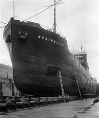

Lorsque la Colombie-Britannique est devenue une province du Dominion du Canada, en 1871, les conditions de l'Union stipulaient qu'une cale sèche devait être construite à Lang Cove. L'économie de la colonie étant très liée à l'industrie navale, il fallait prendre les mesures pour promouvoir l'activité commerciale dans ce secteur. À l'époque, la cale sèche était assez grande pour accueillir tous les navires de l'Empire britannique.
Le ministère fédéral des Travaux publics est chargé d'administrer la cale sèche depuis 1987. Les navires devenant de plus en plus importants, il fut décidé de construire une grande cale de radoub au lieu dit Skinner's Cove, à Esquimalt. Skinner's Cove fut choisie parce qu'elle offrait une bonne protection contre le vent et qu'elle était située dans un bassin de roc, conditions idéales pour l'aménagement d'une cale sèche. Il fallut pas moins de six ans pour construire la cale, qui était la deuxième en importance au monde.
La cale sèche d'Esquimalt a été inaugurée le 1er juillet 1927, dans le cadre des célébrations du Jubilée de diamant. Cette année, la CSE célèbre son 75e anniversaire avec une cérémonie commémorative à laquelle assisteront l'Honorable David Anderson, ministre de l'Environnement et Son Honneur le maire d'Esquimalt, Ray Rice.
(par Leah Prentice)
Choisir une année :